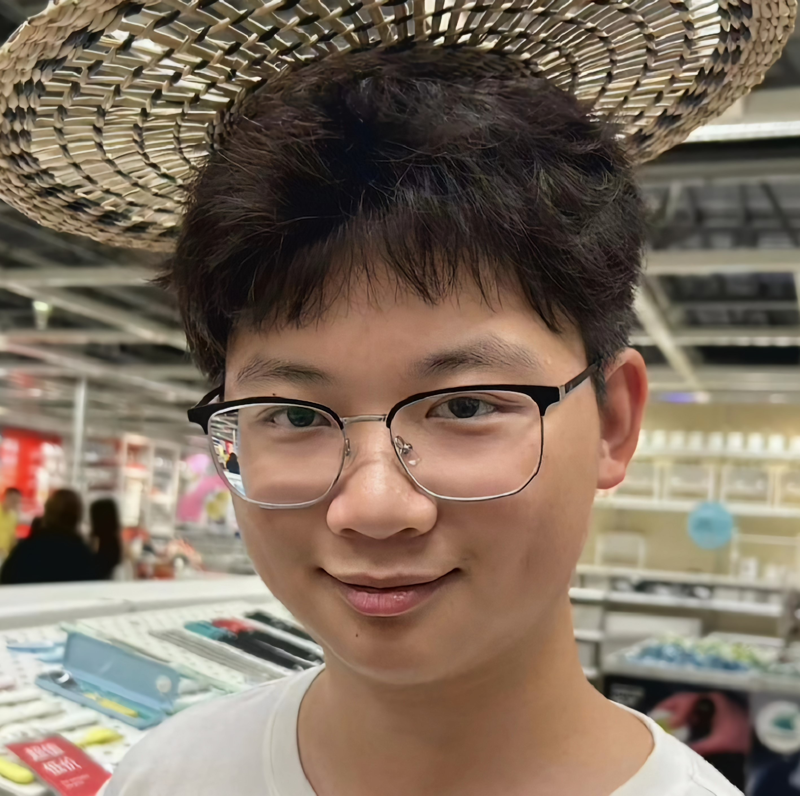
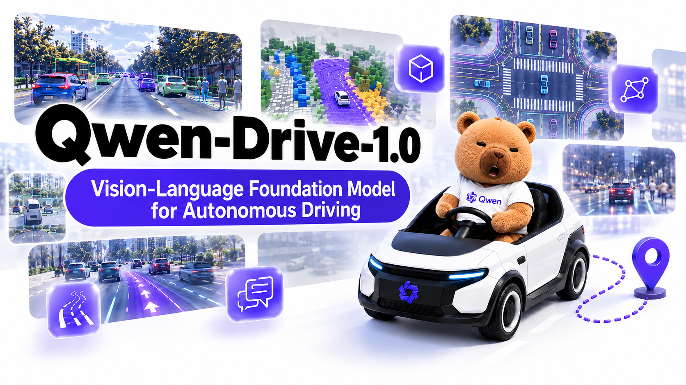
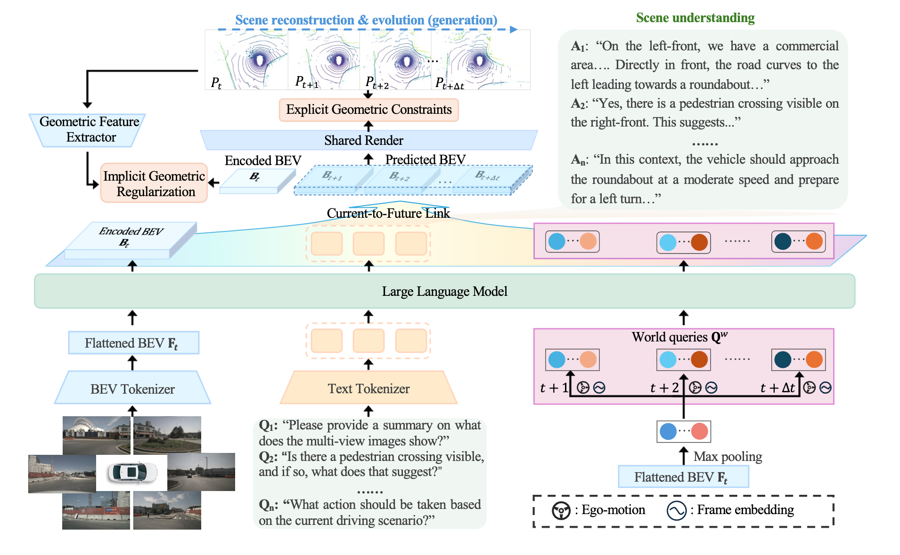
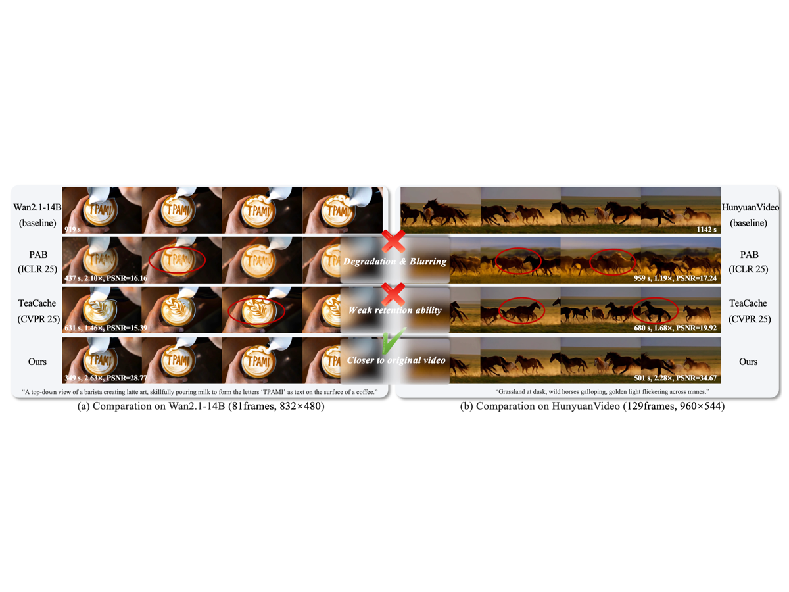
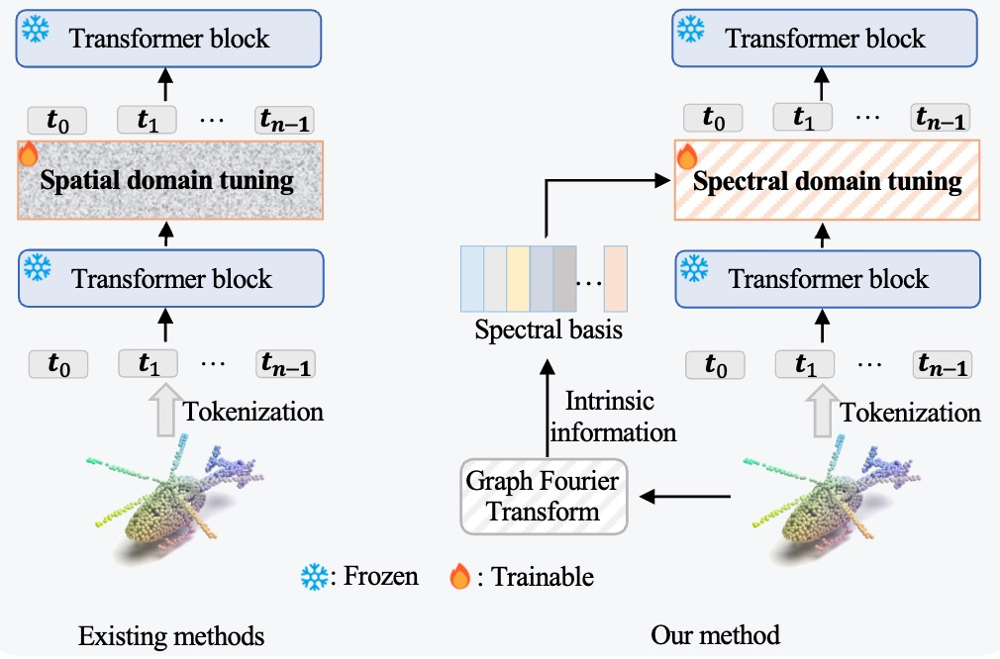

I am a second-year Ph.D. student at Huazhong University of Science and Technology, under the supervision of Prof. Xiang Bai. My research interests mainly lie in 3D vision, especially in 3D understanding and generative models.
Research interests: foundation models, vision-language-action (VLA) models, world models, and world action models (WAM) for autonomous driving and embodied AI.
* Equal contribution
Vision-language(-action) foundation model pretraining for autonomous driving and embodied AI, plus unified generation and understanding.

arXiv'26
TPAMI'26/ICCV'25Driving and general-purpose world models, world action models, and efficient video generation.

arXiv'25Point cloud and 3D scene understanding.

TPAMI'25扫码添加微信，申请好友时请说明来意
Scan to add me on WeChat — please introduce yourself